It was one of the shiny noons of August 2017, and as usual, I was sitting in front of my desktop screen, searching for something interesting to do. Suddenly the phone rang, It was one of my good mentors/ guides Mr Krishna at another end. This time, he has, an interesting problem to solve.
One of his clients was looking for a marketing and promotion solution which can directly communicate their message to the audience and can keep track of effective marketing states. The client was Sony music entertainment.
They have one of the most popular music band in the middle east called "The5". A pop boy band composed of Kazem Chamas, Ahmed Hassan, Adil Echbiy, Said Karmouz and Mohamed Bouhezza (aka BMD). They finished second in the fourth series of the Arabic televised singing competition The X Factor Arabia in 2015 and are currently considered the most popular boy band in the Middle East region.
They had a huge fan following in the entire Arab region. Most of their audience was 18-35 year old, who was not consuming advertisement and promotional content via traditional marketing platforms like newspaper, television and hoardings. They were spending millions of dollars on it but didn't get measurable success. They were unable to get exact data or statics if fans are getting their communicated message via social media marketing or camping.
Band members were not able to engage with their audience directly, were not able to share their message with their fans interactively. It was leading them to lose their fan base.
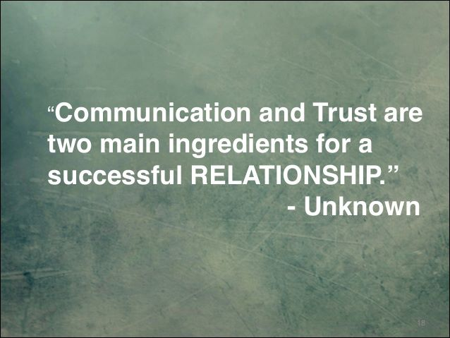If you are not responding your audience, you are losing them.
There was the lack of an interactive marketing and advertisement platform which can connect fans with their stars and stars with their fans. The analytical system to get perfect statics of data if the marketing campaign works, were missing.
There was a lack of transparency the client was not able to check the real statistics and data, provided by their marketing agencies.
Behind this, only one thing was responsible the absence of creativity, thoughts and utilisation of available resources with proficiency. After hearing this, on phone call, my mind flickered! Why not grab this opportunity and provide them with the best solution. On phone call, I assured him of a solution and got ready for the project planning.
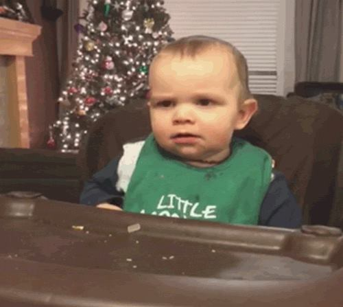At that movement, we had some traditional solutions like Facebook Advertisement, blogging, content marketing, Youtube advertisement in mind, but they were only limited to broadcasting our message to the target audience. Our need was two-way communication and 100% analytics of statics data if the audience is consuming our content. We chose Facebook Messenger Chatbot to do our work.
A chatbot is a computer programme which use natural language processing and artificial intelligence to solve users query and provide them with a interactive way to communicate and do their tasks via an application.
https://en.wikipedia.org/wiki/ChatbotThe day begins, and according to plan, Mr Krishna forwarded us the first script of the chatbot. which was looking like this.
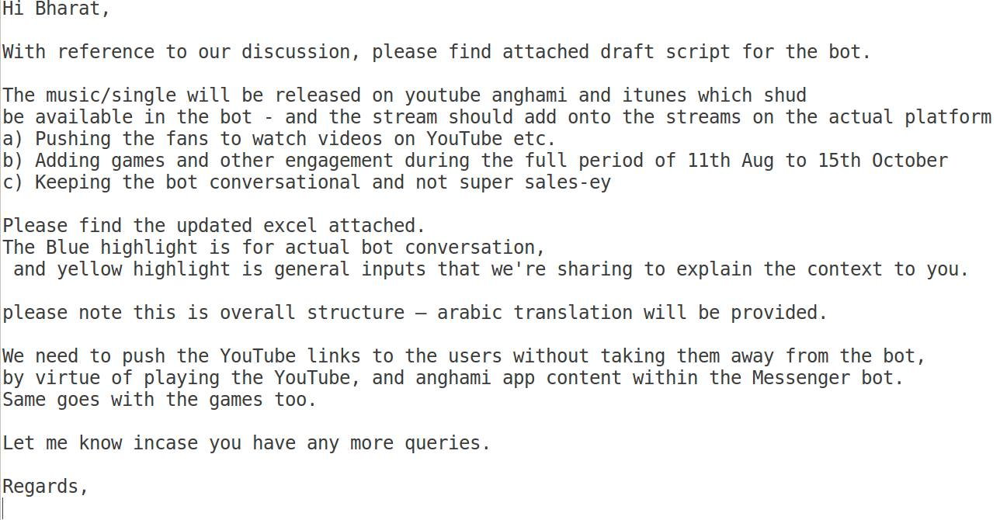Very first mail copy.
Everything was clear in our mind, me with my teammate Nitesh Saxena started to work on this project. We built a Chatbot for the The5 official page. Script had a really great story line and content. We included videos, games, exclusive links, likes and the personality of the band members in the Chatbot. We set the broadcast of our first-day update message and started to monitor our success with the project.
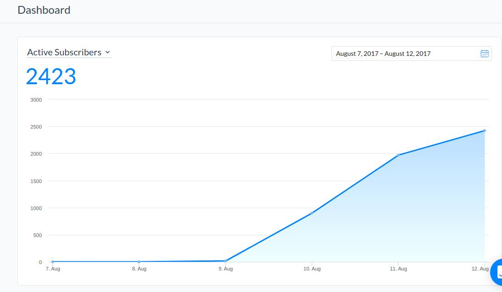As our first message reached to fans/audience/users, they started to subscribe chatbot for latest updates and exclusive album details. It also gave us surety about message delivery to the inbox.
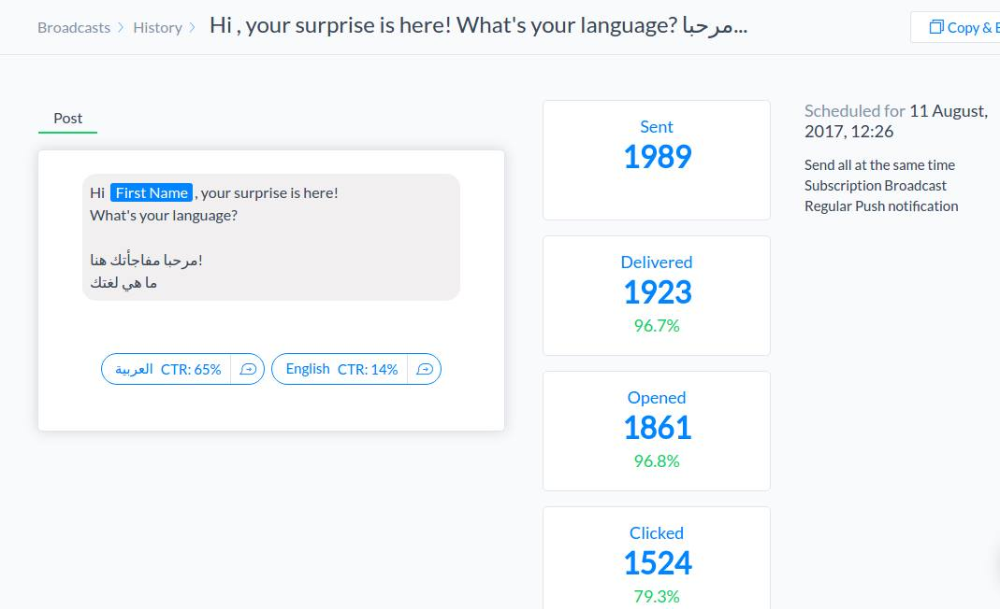on 11th August 2017, It was one of our scheduled broadcasts, which sent 1989 messages, with 96.7% delivery (users who disabled delivery reports are not included in it) assurance and 96.8% open rate.
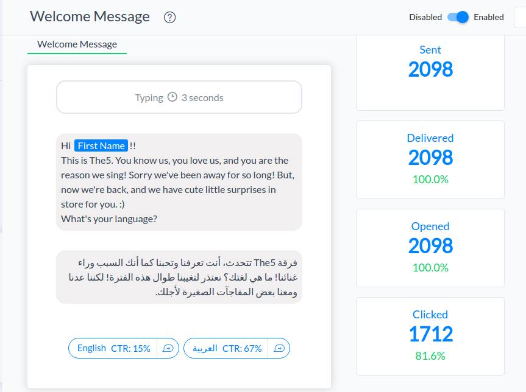On next day, numbers were higher than the previous day. Due to this Chatbot campaign, there was a dramatical increment in the response rate of page and number of user conversation were touching new heights. Chatbot was responding to fans and due to that page response rate blew up.
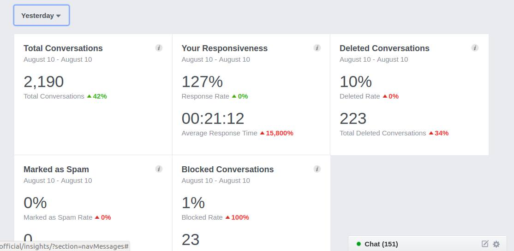All statistics were showing a positive response.
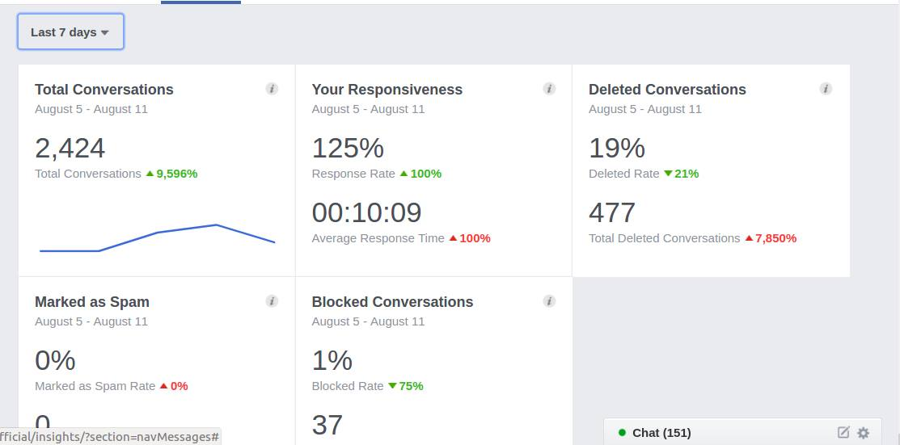Within the window of 2-3 days, average response time decreased from 20:12 minute to only 10:09 minutes, speed increased 100%. Total conversations also touched a new height.
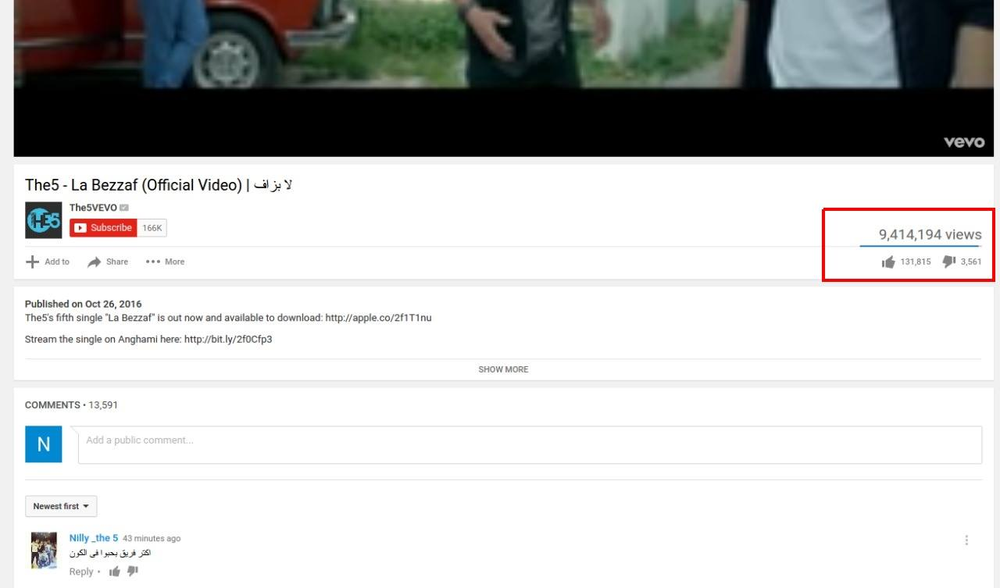Before link sharing.
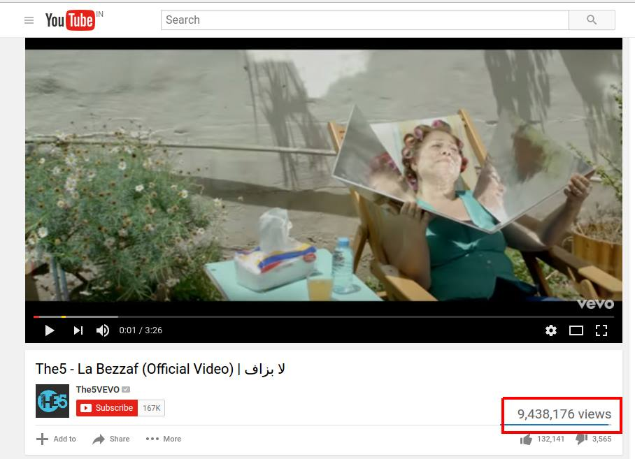After link sharing.
With Chatbot, we also tried to share video links to fans, It helped to increase views on Youtube videos. Fans were sharing those videos with each other via messenger.
This bot had games, videos, posters, interactive conversations, avatar and personality of band members. It was the first time for fans when they were trying to match their personality with starts. As soon as video and album got out, they started to get notify very first. Due to interactive conversations and a great response, the launching event touched a new height of success.
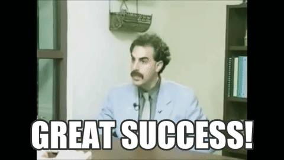After working on this project, it proved, interactive communication with fans, providing them exclusive updates, sharing them posters, giving them the personality of the star, and making them feel special, really made launch event successful.
Thank you
Bharat Sewani